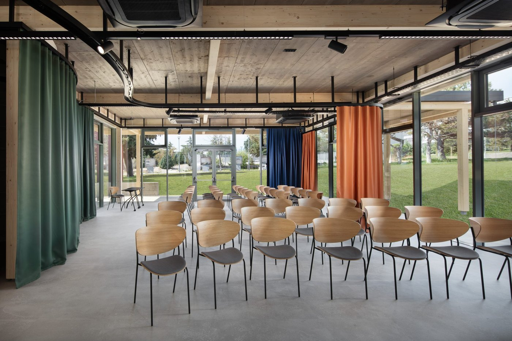

About
27th Edition • Since 1978
Energy and the Environment 2027
October 27–29, 2027 (TBC) • InnovaLab, Rijeka, Croatia — Select a solar ray to explore
Variant 1
Move your mouse over the Vitruvian Man to feel the 5-layer 3D parallax depth and engraved astronomical degree ring.
Level 3 Content View (Without Vitruvian Man)

InnovaLab — University of Rijeka Campus
This demonstrates the Level 3 reading page without the Vitruvian Man. Use the ← Back to Sub-Menu button above (or switch variants in the bottom dock) to compare all 6 visual styles, then tell me which variant or combination you want applied to your live homepage!
